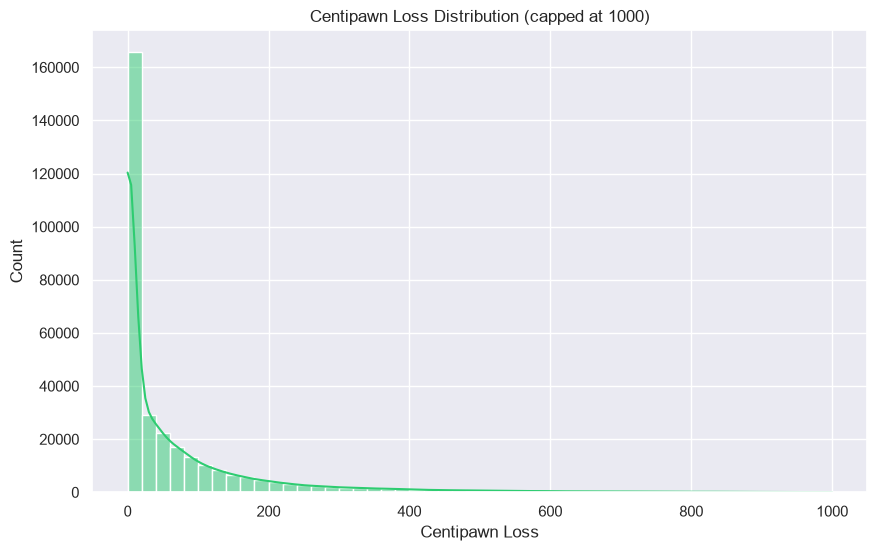
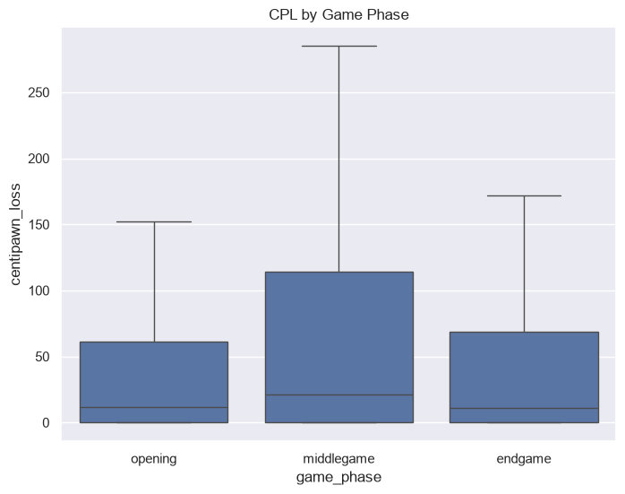
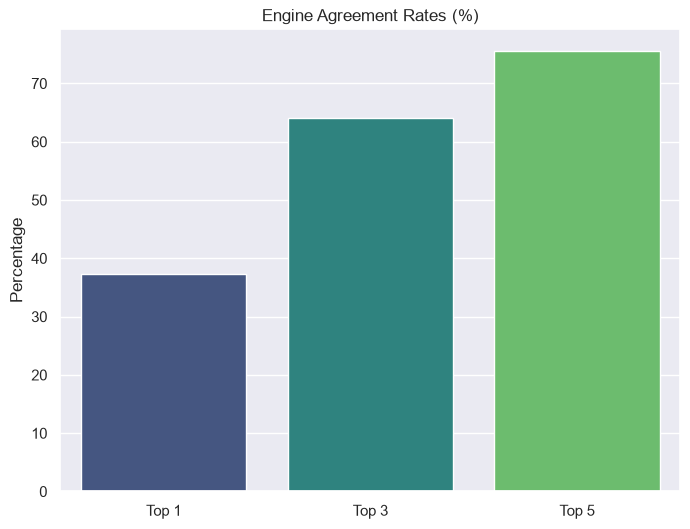
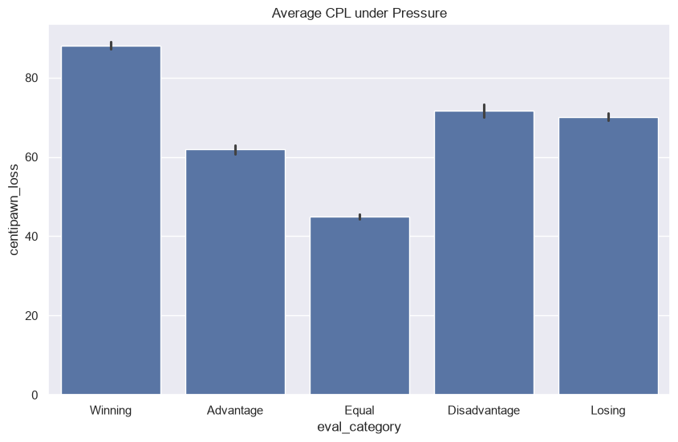

Average CPL: 221.5
Top-1 Engine Agreement: 37.4%
Top-3 Engine Agreement: 64.1%




Based on the analysis, a direct classification model predicting the exact UCI string (e.g. "e2e4") has an extremely high dimensional space (~1800+ possible moves). Given your Top-3 agreement rate is 64.1%, we strongly recommend building a candidate-ranking model for Phase 4. The ML model should evaluate the Top-5 Stockfish candidate moves and predict which of those 5 candidates you are most likely to choose, based on these extracted style features.